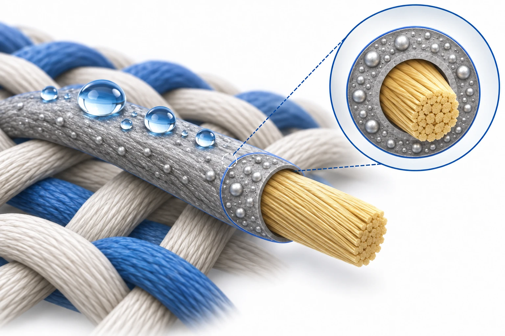

Research context and placement
The abstract explicitly describes moisture-resistant Kevlar composite interconnects; unverified host response does not justify a host secondary tag.
Textile wiring in wet environments
A textile interconnect must keep conducting after exposure to moisture and washing. The introduction identifies two limitations of earlier approaches: thick encapsulation can complicate flexibility and mechanical compatibility, while a repellent but nonconductive textile coating does not itself provide an electrical pathway. The study therefore adds protection at the surface of a conductive fiber.
Conductive and protective layers
Kevlar provides support, the Ag–SBS composite provides conductive connections, and the self-assembled monolayer controls wetting at the outer surface. The reagent comparison separates several design variables: nonfluorinated DT versus fluorinated tails, longer-chain PFDT versus PFHT, and the silane versus thiol heads of equal-chain-length FDTS and PFDT. PFDT combines a fluorinated tail with a thiol head. The authors connect its wetting and immersion results with surface analysis, interpreting thiol–Ag attachment and low surface energy as reasons for its protective performance.

AI-generated concept of a Kevlar support fiber, an Ag–SBS conductive composite coating and PFDT surface treatment. The gray region is the conductive coating, not a thick waterproof SAM encapsulation. Droplets, particles and layer dimensions are explanatory, not measurements or evidence of washing, folding or electrical performance.
Only support, conductive-composite and surface-wetting functions are represented. Particle size, concentration, connectivity, SAM arrangement, layer thickness, weave geometry and contact angles are not reproduced. Blue outlines and the magnification frame are not measured molecular-layer sections.
This is not a reproduced paper figure and does not establish permission to reuse the original figure.
Generated in ChatGPT on the web on 3 October 2026 from verified concepts in a public paper and compared with the reviewed main text. Display processing is limited to WebP encoding, without cropping or content editing.
Immersion, folding and washing
Folding and washing probe different failure modes. Folding used a PET support to control repeated 150° motion over 10,000 cycles. Washing used detergent solution stirred at 600 rpm for 30 minutes per cycle. These counts cannot be combined into a service-life estimate. Water and acid immersion, wetting measurements and an immersed LED interconnection provide additional checks on wet-environment operation.
Resistance after washing
Length-normalized resistance changed from 0.11 to 0.15 Ω/cm after folding. After 20 stirred-washing cycles, PFDT-treated fibers reached 0.28 Ω/cm, compared with 11.44 Ω/cm for untreated fibers. The treatment reduced degradation under those conditions; resistance was not unchanged. The LED demonstration supports interconnection function, rather than waterproofing of an entire garment circuit.
Test conditions and use boundaries
The supported comparison concerns surface treatment on this fiber architecture. Comparisons with everyday laundering need matched detergent, temperature, agitation, drying and mechanical loading; cycle counts do not translate directly into days of use. Wetting and resistance measurements also do not establish skin-contact safety, silver release or long-term coating retention. Those questions remain separate from the demonstrated electrical performance.
Related external research
Highly stretchable electric circuits from a composite material of silver nanoparticles and elastomeric fibres
The external abstract embeds silver inside SBS fibers; #48 uses coated Kevlar and low-energy surfaces against moisture.
Stretchable circuits and washable fibers differ in geometry and conductivity normalization.
Abstract checkedCorresponding-author verification
Jungmok Seo: corresponding authorThis record concerns Jungmok Seo’s correspondence designation. Author order or an asterisk alone is not treated as confirmation; this check is separate from verification of the research content.
- Correspondence evidence source ↗
Corresponding Authors; (J.S.); (T.L.)
PDF p.7; author/correspondence information · publisher_PDF_publicly_hosted_by_author_institution
- Main-text review scope
- Publisher PDF publicly linked by the author institution; pages 1–7: introduction, all experimental subsections, results/discussion, conclusion, corresponding-author statement. References were not individually verified.
- Supplementary review scope
- not read; SI references in the main text do not count as an SI read
- Pending verification
- SI, individual references and practical reproduction conditions were not independently audited. Main-text washing/folding tests and length-normalized resistance do not establish garment life, skin safety, silver release or long-term coating retention.
COVERAGE & OUTREACH
Coverage and outreach
Links are checked for their relationship to this paper. Media publication does not establish independent reporting or additional experimental validation.
[Publication] 최병우 학생 논문, ACS Applied Materials & Interfaces의 Cover로 선정 ↗
The post gives paper 48's exact title and matching authors, including Choi, Lee, Han, Woo, Park and Seo.
Body read Read the announcement and displayed dates. The initial post date is used; the additional 2019-07-16 date appears to be an update.
Unverified candidates and access limits (1)
Unverified candidate · Volume 10 Issue 42 | ACS Applied Materials & Interfaces ↗
The lab links paper 48's cover to this issue, but the cover caption was inaccessible. The indexed main-cover description concerns another study; paper 48's cover placement needs checking.
Body access limited The issue page returned HTTP 403. The verified lab announcement does not substitute for direct verification of the publisher feature.
Sources and verification scope
Publisher PDF publicly linked by the author institution; pages 1–7: introduction, all experimental subsections, results/discussion, conclusion, corresponding-author statement. References were not individually verified.
The additional commentary is editorially approved within the stated evidence scope. This does not imply complete verification of all main-text and supplementary material.
- Additional main-text review scope
- Publisher PDF publicly linked by the author institution; pages 1–7: introduction, all experimental subsections, results/discussion, conclusion, corresponding-author statement. References were not individually verified.
- Additional supplementary review scope
- not read; SI references in the main text do not count as an SI read
- Public publication baseline ↗ · #48 · 2026-10-03
- Crossref metadata ↗: This Crossref entry records a public bibliographic metadata check. The actual abstract, main-text and supplementary reading scope is documented separately on this page; a metadata check does not establish full-text reading or a complete main-text and supplementary audit. Manual comparison found presence/absence of the article A. This was adjudicated as a minor bibliographic variation referring to the same paper; original values were retained. This Crossref record has no license link and does not by itself establish permission to redistribute text or figures. Figure-specific reuse conditions are documented separately in the figure credits and rights record.
- Highly Conductive Fiber with Waterproof and Self-Cleaning Properties for Textile Electronics. ↗
public_abstract_via_EuropePMC_API · Europe PMC REST search resultType=core, abstractText; PMID 30222308; DOI 10.1021/acsami.8b10217. Checked 2026-10-03. - Highly Conductive Fiber with Waterproof and Self-Cleaning Properties for Textile Electronics ↗
main_text · Introduction, PDF p.1–2: wet textile interconnections; encapsulation thickness/mechanical mismatch; nonconductive repellent coatings - Highly Conductive Fiber with Waterproof and Self-Cleaning Properties for Textile Electronics ↗
main_text; mechanistic interpretation attributed to the authors · Experimental 2.1–2.2, p.2; Results p.3–5; Figure 2: DT/PFHT/FDTS/PFDT head/tail and chain comparisons, XPS/FTIR and immersion resistance - Highly Conductive Fiber with Waterproof and Self-Cleaning Properties for Textile Electronics ↗
main_text · Experimental 2.4 and 2.6, p.2–3; Results p.6–7: 150° folding and 600 rpm/30 min washing are separate tests; Figures 3–4 - Highly Conductive Fiber with Waterproof and Self-Cleaning Properties for Textile Electronics ↗
main_text quantitative statement; length-normalized resistance, not conductivity · Results p.6: folding 0.11 to 0.15 Ω/cm; p.7: 20 washes, PFDT 0.11 to 0.28 Ω/cm versus untreated 11.44 Ω/cm; Figures 3–4 - Highly Conductive Fiber with Waterproof and Self-Cleaning Properties for Textile Electronics ↗
editorial interpretation; no new safety, release or lifetime result is claimed · Experimental 2.4, 2.6, p.2–3 and Results p.6–7; limits are editorial distinctions between reported tests and unverified use claims - Highly Conductive Fiber with Waterproof and Self-Cleaning Properties for Textile Electronics ↗
independent_reviewer_selected_main_text · PDF pp.1–7: Introduction, Experimental §§2.1–2.7, Results, Conclusions. SI not read. - Additional commentary source ↗
Research background · Introduction, PDF p.1–2: wet textile interconnections; encapsulation thickness/mechanical mismatch; nonconductive repellent coatings · main_text - Additional commentary source ↗
Approach and advances · Experimental 2.1–2.2, p.2; Results p.3–5; Figure 2: DT/PFHT/FDTS/PFDT head/tail and chain comparisons, XPS/FTIR and immersion resistance · main_text; mechanistic interpretation attributed to the authors - Additional commentary source ↗
Evaluation and conditions · Experimental 2.4 and 2.6, p.2–3; Results p.6–7: 150° folding and 600 rpm/30 min washing are separate tests; Figures 3–4 · main_text - Additional commentary source ↗
Key findings · Results p.6: folding 0.11 to 0.15 Ω/cm; p.7: 20 washes, PFDT 0.11 to 0.28 Ω/cm versus untreated 11.44 Ω/cm; Figures 3–4 · main_text quantitative statement; length-normalized resistance, not conductivity - Additional commentary source ↗
Limits and open questions · Experimental 2.4, 2.6, p.2–3 and Results p.6–7; limits are editorial distinctions between reported tests and unverified use claims · editorial interpretation; no new safety, release or lifetime result is claimed - Additional commentary source ↗
Connections to related work · Existing verified abstract record for Highly stretchable electric circuits from a composite material of silver nanoparticles and elastomeric fibres · abstract_only; reused from data/evidence.json #48 - Additional commentary source ↗
Connections to related work · Study objective and wet-environment motivation · main_text; comparison is editorial